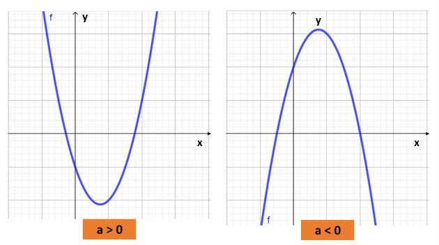
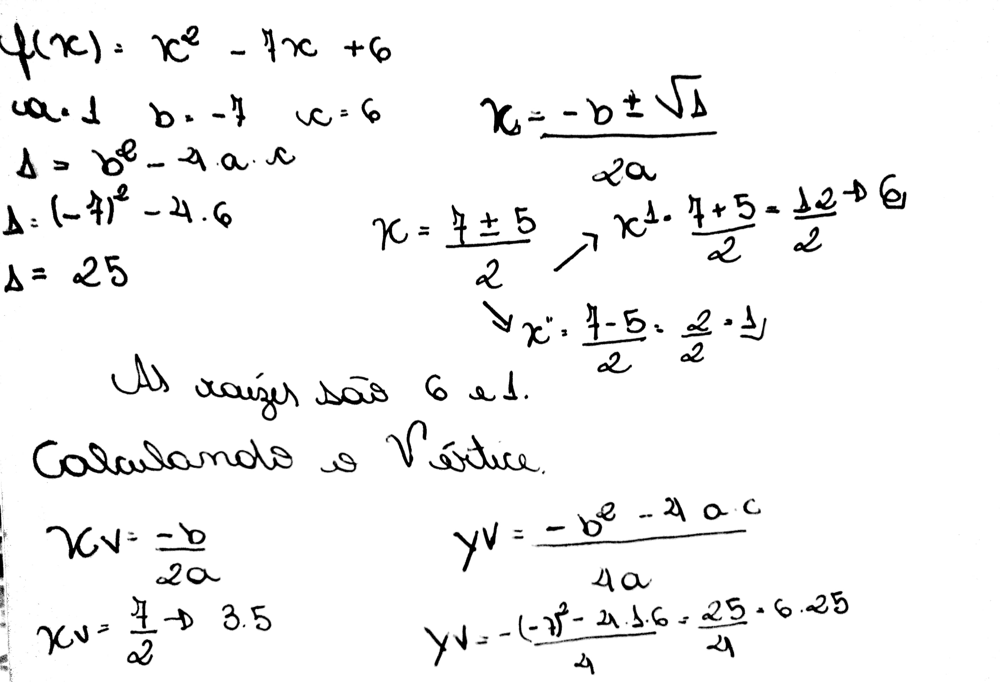
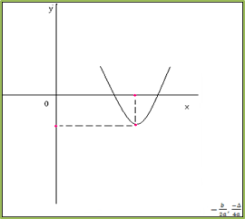
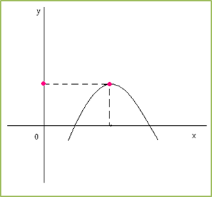

Funções Quadráticas
- Função Quadrática ou Função do 2º grau é uma função definida por: f(x)= ax² + bx + c.
- Os coeficientes a, b e c são números reais e o coeficiente a precisa ser, difrente de zero.
- Exemplo: f(x)= x² + 10x + 8 = 0
a = 1 b = 10 c = 8.
- Exemplo 2: f(x) = -7x² + 3x + 5 = 0
a = -7 b = 3 c = 5
- A fómula de Bháskara permite encontrar as raízes de qualquer equação do 2° grau completa ou icompleta.
- A expressão: b² - 4.a.c, chama-se discriminante.
Raízes Reais ou Zeros da Função Quadrática
- As raízes ou zeros da função quadrática são os valores de x em que a f(x) = 0.
- Graficamente, eles interseptam o eixo x.
- Para encontrá-las basta atribuir zero para o y (ou para a f(x)), transformando a função numa
equação do 2º grau e resolvê-la. Uma das técnicas é a Bháskara.
- Se ∆= 0 a função tem duas raízes reais igual (uma raiz na verdade).
- Se ∆> 0 a função tem duas raízes reais diferentes.
- Se ∆< 0 a função não tem raízes reais.
Observações:
1) Uma função quadrática pode ter duas, uma ou nenhuma raiz. Se tiver duas, irá interceptar o eixo x
em dois pontos. Se tiver uma, vai encostar no eixo x em um ponto. Se não tiver nenhuma raiz real, a
parábola não vai encostar no eixo x.
2) Quando estivermos resolvendo a fórmula de bháscara e dentro da raiz obtivermos um valor negativo,
conclui-se que a função não tem raízes reais.
Vamos determinar as raízes desta função: f(x)= 0 -> x² -7x + 6 = 0
- Δ=25
- x = 7 ± 5/2 -> x = 6 x² = 1
- Portanto, os números 1 e 6 são os zeros dessa função.
Concavidade

Para sabermos se a parábola é voltada para cima ou para baixo basta analisar o coeficiente "a".
Vértice
O vértice é o ponto da função quadrática em que a parábola muda seu crescimento/decrescimento. Quando a concavidade está para baixo, o vértice é o ponto de máximo. Quando a concavidade está para cima, é o ponto de mínimo. 1º forma: Encontrar as raízes. A abcissa x do vrtice será a média aritmética entre as raízes. A ordenada y vértice pode ser obtida substituindo o xencontrado na função dada.
Veja a imagem, onde foi calculada as raízes da função e o vértice.

Conjunto Imagem da Função
- A partir das coordenadas do vértice da parabóla, podemos determinar o conjunto imagem da função.
- O Im da função, é o conjunto dos valores que y pode assumir. Podendo ser:
- a > 0
- a < 0
Valor Mínimo e Máximo da Função Quadrática
- Pelo esboço do gráfico das funções quadráticas variando de acordo com a concavidade da parabóla.
- a > 0

Pelo esboço, você observa que a função apresenta um valor mínimo Yv, que é a ordenada do vértice. Nesse caso, a abscissa do vértice é chamada de ponto mínimo da função.
Pelo esboço, observamos que a função representa um valor máximo. Concluimos que:
- Se a > 0, Yv = é o valor mínimo da função.
- Se a < 0, é o valor máximo da função.
